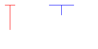

Name: ________________________________________________________
Umail Address: __________________________________@ umail.ucsb.edu
Circle Lab section: 9AM 10AM 11AM Noon
Link to Printer Friendly PDF Version
Please write your name only on this page. That allows me to grade your exams without knowing whose exam I am grading.
This exam is closed book, closed notes, closed mouth, cell phone off,
except for:
There are 100 points worth of questions on the exam, and you have 3 hours (180 minutes) to complete the exam.
A hint for allocating your time:
That will leave you with 80 extra minutes to check your work, or come to problems that gave you trouble.
(5 pts) Read the instructions carefully and completely so you don't lose points!
You were given an extra handout along with this exam, with a definition of a struct Date.
Using that definition, write a definition of struct Hwk—where Hwk stands for "Homework Assignment"—that contains the following fields.
For full credit, use exactly the names and types given.
num, an integer representing the homework assignment numberearned, an integer representing the points earnedposs, an integer representing the points possible on that assignment.date, an instance of struct Date representing the date the student completed the assignment.Material below this line goes with the question on the next page
int main()
{
int failures=0;
struct Hwk asns[]={ {1, 9, 10,{4,10,2010}},
{2, 9, 10,{4,10,2010}},
{3, 10, 10,{4,17,2010}} };
// compute expected grade as a percentage
double expected= ((9+9+10)*100.0)/(10+10+10);
const double tol=0.0001;
failures += CHECK_EXPECT_DOUBLE(overallGrade(asns,3),expected,tol);
return tddFinish(failures);
}
(10 pts) Now, using the struct Hwk you defined in in the previous question, consider a function with the following prototype:
double overallGrade(struct Hwk *asns, int n);
The parameter asns represents an array of homework assignments (each one an instance of struct Hwk), and n represnts the number of elements in that array. The function is intended to return the overall grade the student earned on all of the assignmets, i.e. total points earned divided by total points possible, as a percentage.
The box on the previous page shows a test case for the function (written using the test-driven development framework we've been using thorughout the course.)
The function definition below is correct, except that some lines of code are missing.
Fill in the missing lines of code so that the function works properly.
double overallGrade(struct Hwk *asns, int n)
{
int totalPoss=0, totalEarned=0;
int i;
for (i=0; i<n; i++)
{
}
}
struct Circle and struct Point on the handout that came with this exam.void moveCircle(struct Circle *c, double dx, double dy);dx pixels in the x direction, and dy pixels in the y direction.
int main()
{
int failures=0;
struct Circle c = { {10.0, 5.0}, 3.0} ;
moveCircle(&c, 2.0, -3.0);
failures += CHECK_EXPECT_INT(c.center.x, 10.0 + 2.0);
failures += CHECK_EXPECT_INT(c.center.y, 5.0 - 3.0);
return tddFinish(failures);
}
| Expression | Value in decimal |
0xA |
10 |
1 ^ 0 |
1 |
4 ^ 2 |
|
0xA & 0xC |
|
3 | 9 |
|
7 && 4 |
|
9 || 0 |
|
1 << 4 |
|
32 >> 1 |
|
020 |
|
0x20 |
char thisCity[20] = "Santa Barbara";
char thatCity[20] = "Los Angeles";thisCity[5]='\0'; // backslash zero
thatCity[3]='0'; // just plain old zero
printf("%s",thisCity);printf("%s",thatCity);printf("%i",strlen(thisCity));printf("%i",strlen(thatCity));copyNonZero()—with a few parts missing that you need to supply.@@@ symbol
// Copy all numbers not equal to zero from array src into array dest.
// n is the occupancy of array src.
// Destination array should have capacity at least of size n.
// Return the number of values copied into dest
int copyNonZero(int *src, int *dest, int n)
{
int i;
int count=0;
for (i=0;i<n;i++)
{
if ( _________________________ != 0) // @@@ (4 pts)
{
__________________________ = src[i]; // @@@ (4 pts)
count++;
}
}
return ______________________; // @@@ (2 pts)
}
Homework H15 involved an exercise that mimicked one from the Etter textbook, where you had to draw diagrams representing variable values and pointers. This exam question asks you to draw similar drawings (see box at right for an example.)
For each of the following, give the FINAL drawing—the one that would occur AFTER all the code executes. Each problem starts from scratch.
I've left space for "scratch work" as well as your final answer—I recommend you draw the initial state, make each change by crossing things out, then copy your final answer into the box given.
int a=6, b=7, *p1=&b, *p2=&a; |
Scratch work |
|---|---|
| Final answer |
int a=2, b=3, *p1, *p2; |
Scratch work |
|---|---|
| Final answer |
struct Point { double x;
double y;
};
void initPoint(struct Point *p, double xVal, double yVal);
struct Point makePoint(double xVal, double yVal);
void drawLine(struct Drawing *d, struct Point p1, struct Point p2, int color);
Using these, write the function definition for a function drawT that draws the letter T(as shown below).
Here is the function prototype for the drawT function you should define:
void drawT(struct Drawing *d,And here is a sample main, and its output
struct Point ul, // upper left corner
double w, // width
double h, // height
int color);
int main()
{
struct Drawing d;
initDrawing(&d, DRAWINGTYPE_COLOR, 200, 100, COLOR_WHITE);
|
 |
If you need extra room, use the space on the next page
Extra space for your drawT function (answer to question 11)
mysteryFunction. As parameters, it takes an array of integers a, and the length of that array n as parameters, and returns an integer. What it actually computes is a mystery for you to solve.
int mysteryFunction(int *a, int n)
{
if (n<2)
return 1;
if (a[0]>a[1])
return 0;
else
return mysteryFunction(a+1, n-1);
}
Solve the mystery by figuring out what the mystery function computes, then decide which of the following is a more reasonable name for the function.
Among these possible function names, one (and only one) of them would be a reasonable answer to this question.
Just circle the correct answer.
average |
indexFirstEven
|
maxValue |
Total points: ?
Struct definitions for Questions 1 and 2:
struct Point {
double x;
double y;
};
struct Circle {
struct Point center;
double radius;
};
struct Date
{
int m;
int d;
int y;
};